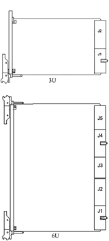
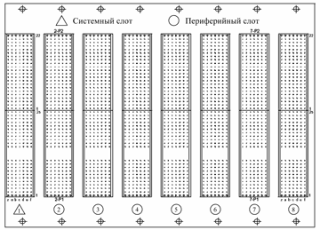
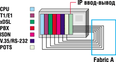
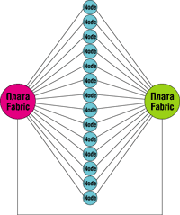

Игорь Сорокин
Разработка стандарта Compact PCI была инициализирована в 1994 г. корпорацией Ziatech под эгидой организации PCI Industrial Computer Manufacturers Group (PICMG, http://www.picmg.org). В рамках этого консорциума, созданного в 1994 г., компании-производители совместно разрабатывали открытые спецификации в области высокоэффективных телекоммуникационных и вычислительных систем; в их числе были такие лидеры отрасли, как IBM, Motorola, Texas Microsystems, HP, Compaq, Industrial Computer Source, DEC, Force Computers, GESPAC, Pro-Log, Teknor и Ziatech (сегодня в PICMG более 600 членов). Непосредственно спецификация Compact PCI создавалась совместными усилиями подкомитета, в который вошли следующие фирмы: DEC, GESPAC, I-Bus, Pro-Log, Teknor, Hybricon, Ziatech.
По классификации OSI рассматриваемый стандарт в начале своего творческого пути находился на физическом уровне связи данных. Аппаратное устройство в стандарте Compact PCI представляет собой шину с компонентами (платами), предназначенную для использования в широком диапазоне приложений, включая телекоммуникации, компьютерную телефонию, контроль в реальном масштабе времени, автоматизацию промышленности, сбор данных (опять-таки в реальном времени), инструментальное производство, военные системы и т. д. Очевидный приоритет при выборе этой шины - ее использование в качестве высокоскоростного устройства передачи данных в системах с модульным построением и компоновкой, обеспечивающей высокую надежность при наличии неблагоприятных внешних воздействий самого разного плана - от электромагнитных помех до механических ударов, вибрации и влияния агрессивной среды. Compact PCI можно с полной определенностью считать результатом модернизации стандарта PCI на пути от настольных систем к промышленным приложениям с достаточно очевидным предложением использовать результирующую технологию в качестве средства объединения систем и шин разного типа, причем на том уровне, где требуется производительная магистраль.
Собственно стандарт имеет следующие отличительные черты:
- унифицированные размеры Eurocard в соответствии с IEEE 1101.1;
- компактные соединители с шагом 2 мм;
- вертикальное расположение плат (речь идет об охлаждении);
- высокая устойчивость к ударным и вибрационным воздействиям;
- металлическая передняя панель съемных плат (карт);
- соединители, предназначенные для пользователя, как на передней, так и на задней панели плат;
- применение стандартных шасси от разных изготовителей;
- каскадное исполнение выводов питания для режима горячей замены;
- поддержка восьми слотов в базовой конфигурации (с расширением при использовании мостов).
Материальная часть
Форм-фактор в стандарте Eurocard (рис. 1) подразумевает два типоразмера плат: 3U (100х160 мм) и 6U (160х233 мм), причем 3U с группами контактов J1 и J2 - это минимально необходимый вариант поддержки спецификации шины, в то время как 6U предполагает использование дополнительных устройств, шин и функций (контактные группы J3…J5).
|  | Рис. 1. Форм-фактор плат cPCI.
|
К основным достижениям технологии Compact PCI без преувеличений следует отнести выполненный в соответствии с международным стандартом IEC-1076 герметичный разъем для установки плат на объединительную панель. Компактный, с низкой индуктивностью и контролируемым импедансом разъем имеет 44 ряда сигнальных контактов по 5 в каждом ряду (всего 220 для типоразмера 3U) и снабжен дополнительным внешним металлическим экраном. Группы J1 и J2, каждая из 110 контактов, допускают следующие варианты применения: если плата работает в 32-разрядном режиме передачи данных, то достаточно задействовать группу J1; в 64-разрядном варианте используется группа J2, при этом возможна комбинация разных плат на одной и той же 64-разрядной объединительной панели. Большое количество рационально расположенных заземляющих контактов разъема обеспечивает эффективную экранировку помех.
Плата типа 6U имеет разъем с общим количеством контактов, равным 315. Дополнительные контакты могут использоваться в разных целях, например, в качестве шин второго уровня (таких, как телефонные MVIP и SCSA), мостов к шинам типа ISA и VME, а также устройств ввода-вывода в комбинированных объединительных платах. Compact PCI в данном случае играет роль высокоскоростной или процессорной секции в общем потоке данных, в то время как другие аппаратные средства выполняют традиционную кропотливую работу в режиме, который часто скрывается за лаконичным термином I/O.
Передняя панель съемных плат, включая фиксаторы, имеет конструктивный интерфейс в соответствии с IEEE 1101.10. У пользователей ПК плата, которая "задвигается" в корпус, возможно, вызовет ассоциацию с обоймой, зато на производстве и в лабораториях специалисты не глядя защелкивают модули и не носят в карманах винтов.
В отличие от PCI, где число слотов в базовой конфигурации не превышает четырех, Compact PCI поддерживает до восьми слотов (рис. 2). Дальнейшее расширение реализуется с помощью мостов (наборов чипов) типа PCI-PCI, выступающих в качестве мощных буферов: через них передаются данные и управляющие сигналы, а также информация plug-and-play. Все это позволяет в итоге довести количество слотов до 32. Время, которое мост тратит на запуск транзакции, составляет примерно 30 нс и по сравнению с длительностью самой транзакции, когда по шине в пакетном режиме проходят несколько килобайт информации, эта задержка довольно мала. Мост параллельно (одновременно) обслуживает платы, приписанные к каждой из двух его "сторон". Кстати говоря, описанные выше дополнительные контактные группы платы типа 6U могут использоваться для подключения очередного 64-разрядного 8-слотового сегмента системы. В случае 32-разрядной шины для этой цели достаточно воспользоваться контактной группой J2.
|  | Рис. 2. Базовая объединительная панель cPCI.
|
К топологии и элементам объединительной панели, а также съемных плат предъявляются весьма жесткие требования, в основу которых положены использованные при разработке стандарта параметры и результаты моделирования. Формально модификации допускаются, но творчество в этом деле должно подтверждаться соответствующими испытаниями. Существует ряд положений, которые в спецификации описываются с использованием модального глагола SHALL (напечатанного прописными буквами!), а это значит, что при разработке устройств в стандарте Compact PCI соответствующие требования должны выполняться непременно.
Каждый сегмент системы включает один системный и семь периферийных слотов, при этом последующее расширение предполагает полное заполнение данного сегмента (см. рис. 2). Плата системного слота обеспечивает арбитраж шины, формирование тактовых сигналов, прием и выдачу сигналов управления. Вообще говоря, ее конкретное расположение на объединительной плате сегмента не имеет никакого значения, однако с целью унификации для слота выбрана крайняя левая позиция (на рис. 2 помечена треугольником). Физические обозначения слотов должны состоять из номеров 1,2, 3…N, где N - количество слотов, причем нумерация начинается от левого верхнего угла панели. Для указания группы контактов используются обозначения P1…P5, так что 2-я группа 7-го слота обозначается как 7-P2*.
* В спецификациях для соединителей обычно приводятся обозначения J1/P1, J2/P2 и т. д. Это не совсем оправданное дублирование.
Вот некоторые принципиальные конструктивные моменты, записанные в стандарте как ОБЯЗАТЕЛЬНЫЕ:
- расстояние между слотами - 20,32 мм;
- согласующие резисторы с номиналом 10 Ом располагаются на сигнальных линиях в пределах не более 15,2 мм от контактного вывода разъема;
- длина проводника от вывода разъема до вывода компонента - не более 38,1 мм;
- на системном слоте каждая сигнальная линия может быть подсоединена не более чем к двум входам, при этом дополнительная длина второго проводника не должна превышать 25,4 мм (в случае одного входа длина проводника не более 63,5 мм);
- длина проводников линий CLK на периферийных платах равна 63,5 ± 2,54 мм.
Спецификация питания, которую должна обеспечивать объединительная панель, приведена в таблице.
Спецификация питания для объединительной панели
| Мнем. | Описание | Номинал, В | Допуск, % | Мин. пульс., мВ |
| 5 В | +5 VDC | 5,0 | ±5 | 50 |
| 3,3 В | +3,3 VDC | 3,3 | ±5 | 50 |
| +12 В | +12 VDC | 12,0 | ±5 | 50 |
| -12 В | -12 VDC | -12,0 | ±5 | 50 |
| GND | Ground |
Если говорить о протоколах и функциональных свойствах Compact PCI, то она наследует их от стандартной шины PCI с введением дополнительных сигналов, которые призваны улучшить работу системы в организационном плане. Push Button Reset (PRST#) - это сигнал от кнопки Reset для платы системного слота. Power Supply Status (DEG#, FAL#) - сигналы системы контроля питания для платы системного слота. System Slot Identification (SYSEN#) - это сигнал идентификации системного слота. Legacy IDE Interrupt Support (INTP and INTS): поддержка прерываний интерфейса IDE. Geographical Addressing - пространственная идентификация слотов по их расположению на объединительной панели: пять выводов с именами G0…G4 в определенном сочетании соединяются с GROUND либо остаются свободными, а в результате можно получить 32 "географических" адреса модулей. System Enumeration (ENUM#) - сигнал горячей замены для системного модуля о том, что плата была вставлена или изъята.
Что касается механизма горячей замены (HS), можно выделить основной его принцип. Каскадное исполнение выводов съемной платы реализовано с использованием трех размеров в геометрии разъема. Самые короткие выводы - BD_SEL#, затем идут средние выводы для всех сигналов, и, наконец, самые длинные - это выводы питания. Последовательность установки платы предполагает, что после контакта выводов питания происходит предварительный заряд и установка в определенное состояние всех сигнальных уровней. При отсоединении платы первым размыкается вывод BD_SEL#, а его сигнал по определению доступен программным средствам в качестве индикатора предстоящей операции удаления платы.
Свод основных законов
Если говорить о совокупности проектов, связанных с технологией cPCI, то в рамках этой статьи возможно лишь в сжатых комментариях описать ситуацию на основе расшифровки сути собственных проектов организации PICMG. Этот раздел, посвященный содержанию ключевых спецификаций cPCI, можно рассматривать как историческую справку с футуристическим контекстом. Начнем с группы действующих спецификаций.
Действующие спецификации
PICMG 2.0 R2.1 CompactPCI определяет форм-фактор IEEE 1101.1 (Eurocard) и устанавливает назначение контактов для IEC 1076-4-101 2-мм соединителей.
PICMG 2.0 R3.0 CompactPCI вводит последовательность соединения выводов для горячей замены.
PICMG 2.0 Revision 3.0 ECN 002 вводит связь между географическими и физическими адресами.
PICMG 2.1 R1.0 CompactPCI Hot Swap определяет конфигурацию выводов и другие аппаратные особенности для съема и установки плат при работающей системе CompactPCI (горячая замена).
PICMG 2.1 R2.0 CompactPCI Hot Swap включает в себя уточнения программной архитектуры, поддержки режимов 3,3 В и 66 МГц, PCI-X-совместимости, соглашения о терминах.
PICMG 2.2 VME64x Bus Pin Assignments on CompactPCI определяет назначения выводов для расширений VME64 в соответствии с требованиями ANSI и VITA для соединителей J4/P4 и J5/P5 на объединительной панели.
PICMG 2.3 PMC I/O Pin Assignments on CompactPCI определяет назначение выводов пользователя для соединителей J3/P3, J4/P4, J5/P5 на объединительной панели в соответствии с IEEE 1386 PMC; PICMG 2.4 IP I/O Pin Assignments on CompactPCI - то же самое в соответствии с ANSI/VITA IP.
PICMG 2.5 CompactPCI Computer Telephony Specification регламентирует конфигурацию выводов, определенных пользователем для использования в телефонии применительно к оборудованию с платами типа 6U.
PICMG 2.7 Dual CompactPCI Backplanes определяет средства процессорных CompactPCI-плат для управления двумя независимыми сегментами шин PCI в конструктиве 6U. Шина, соединенная с J1/J2, обозначается как A, шина, связанная с J4/J5, - как B.
PICMG 2.9 Secondary System Management Bus for CompactPCI - спецификация для вспомогательной шины управления системой, призванная обеспечить контроль плат CompactPCI со стороны основного или подчиненного процессора. В качестве примера используемой информации о платах можно назвать серийный номер, вариант исполнения или рабочую температуру. В случае отказа хост может посылать по вспомогательной шине команды сброса или отключения питания для поврежденных плат.
PICMG 2.10 Keying of CompactPCI Boards and Backplanes добавлен с целью безопасного применения конфигурации выводов, определяемой пользователем, путем введения ключей в конструкцию J4/P4 согласно IEC 1076-4-101, а также выполнения требований по IEEE 1101.10.
PICMG 2.11 Power Interface заменяет спецификацию PICMG 2.0 rev1.0, определяя электрические и механические требования для функционирования и взаимодействия встроенных модулей питания.
PICMG 2.12 R1.0 CompactPCI Software Interoperability совершенствует взаимодействие программных продуктов. Исходная цель заключается в разработке одного или нескольких программных интерфейсов поддержки режима горячей замены, где возможно, независимых от операционной системы (в отдельных случаях допускается привязка к конкретной ОС).
PICMG 2.12 R2.0 CompactPCI Software Interoperability содержит обновления в части взаимодействия программных продуктов, включая PICMG 2.1 R2.0, Windows и Linux, новые ОС, резервный системный слот Redundant System Slot (RSS) API, поддержку переключения PCI-PCI мостов, аппаратно- и ОС-независимую модели соединенных в сети узлов, управление HS- и RSS-платформами cPCI, конфигурацию выводов IDSEL и GA.
PICMG 2.14 CompactPCI Multicomputing определяет основанное на пакетной передаче данных взаимодействие гетерогенных агентов PCI (многопроцессорные системы). Пользователи Compact PCI крайне заинтересованы в стандартизации методов совместной работы процессорных плат, разделяющих адресное пространство PCI. Соответствующий подкомитет разрабатывает топологию системы и программные методы с целью обеспечения совместной работы плат от разных производителей без доработки пользователем. Это означает использование разных семейств процессоров (Pentium II, PowerPC, MIPS и т. д.) и определение минимума аппаратных требований для обеспечения сигналов в полосе частот PCI.
PICMG 2.15 PCI Telecom Mezzanine Card Specification (PTMC) относится к мезонинной плате, основанной на стандартном для PCI варианте PMC с четырьмя соединителями, из которых Pn1 и Pn2 поддерживают сигналы PCI, а Pn3 и Pn4 - три специализированных telecom-интерфейса и Ethernet (RMII, Ethernet PHY Management Interface, UTOPIA Level 1, UTOPIA Level 2, POS-PHY Level 2 и ECTF H.110).
PICMG 2.15 Revision 1.0 ECN 001 расширяет конфигурацию соединителя PTMC за счет двух новых вариантов. Первый улучшает TDM-свойства с расширением полосы пропускания и добавлением Ethernet, второй объединяет возможности ATM (UTOPIA Level 2) и Ethernet.
PICMG 2.16 IP Backplane for CompactPCI - спецификация, предназначенная для реализации системной встроенной сети (Embedded System Area Network, ESAN) на основе 10/100/1000 Ethernet с использованием топологии "звезда" (см. следующий раздел).
PICMG 2.17 Switched PCI-PCI Bridging for CompactPCI определяет требования к объединительной панели, узловым и коммутационным платам, совмещая технологию StarFabric** и существующие стандарты PICMG.
** Архитектура StarFabric - это разработка компании StarGen, которая заслуживает отдельного рассмотрения. Она представляет собой мощную коммутационную структуру, допускающую использование встроенных распределенных приложений.
PICMG 2.20 Serial Mesh Interconnect - спецификация CompactPCI Serial Mesh Backplane (CSMB) определяет высокоскоростную структуру с последовательными линиями связи применительно к аппаратуре на платформе Compact PCI. Назначение проекта - развитие транспортных возможностей систем cPCI для скоростных телекоммуникационных приложений (например, многоцелевых маршрутизаторов) и обеспечение совместимости с целью быстрого внедрения новых изделий. Конкретно это означает разработку для объединительной платы высокоскоростных сигнальных и соединительных стандартов при условии максимально высоких частот в дифференциальной линии связи. Данная спецификация расширяет положения PICMG 2.16, добавляя 2,5-Гбит соединение для ATM- и смешанных приложений, таких, как проводные станции связи стандарта 3G, контроллеры радиосетей, оборудование DSL и медиа-шлюзы. CSMB использует дифференциальные последовательные сигналы со скоростями 1,25 и 2.5 Гбит/с, в перспективе нацеливаясь на значение 3,125 Гбит/с. Каналы соединяются в сетку, образуя распределенную коммутационную структуру. В такой архитектуре нет фиксированных протоколов для коммутаторов/маршрутизаторов, что улучшает масштабируемость, управление трафиком и снижает цену. Разные протоколы могут поддерживаться без усложнения системы, а цена модернизации просто равна стоимости добавленных устройств и сервисов.
Проекты в стадии разработки
Перечень проектов, находящихся в стадии разработки, выглядит следующим образом.
PICMG 2.0 Revision 3.0 ECR 001 вводит поддержку сигналов PCI-X.
PICMG 2.1 D3.X CompactPCI Hot Swap содержит дополнения к спецификации горячей замены.
PICMG 2.6 PCI-PCI Bridging for CompactPCI Backplanes определяет средства поддержки двух независимых сегментов PCI для конструктива 6U.
PICMG 2.8 Instrumentation Extensions to CompactPCI определяет конфигурацию выводов J2 для инструментальных систем на базе cPCI.
PICMG 2.13 System Slot Hot Swap - спецификация определяет подход, основанный на использовании резервного системного слота, что позволяет, собственно говоря, проводить горячую замену системных слотов.
PICMG 2.18 Serial RapidIO over CompactPCI - проект имеет целью реализацию на объединительной панели последовательной высокоскоростной связи на основе 1,25-Гбит дифференциальных пар. Подкомиссии необходимо выполнить моделирование результирующей системы.
Отдельно мы рассмотрим проект PICMG 2.16, который выпадает из общего списка просто потому, что определяет сферу применения технологии cPCI на высоком уровне взаимодействия, когда дело касается кардинальных архитектурных решений в части организации связи между компонентами систем.
Суперлокальная сеть
Как принято на нынешнем этапе философского подхода к процессу обмена данными, разработчики не могли обойти стороной архитектурные моменты и в спецификации PICMG 2.16 реализовали идею (не новую, правда) локальной сети Ethernet в пределах аппаратного блока, когда обмен между модулями ведется не на базе шинной архитектуры, а путем пакетного обмена данными на уровне транспорт/сеть иерархии OSI. Группа PICMG назвала этот вариант Compact Packet-Switching Backplane (cPSB - компактная объединительная панель с коммутацией пакетов). Преследуя цель улучшения масштабируемости системы и быстрого внедрения стандарта, разработчики действительно получили поддержку целого ряда компаний. Более 40 фирм в течение 14 месяцев после ратификации новой спецификации (в сентябре 2001 г.) разработали и выпустили самые разные продукты, совместимые с PICMG 2.16.
За внешним - чисто презентационным, как может показаться, - подходом в данном случае скрывается проблема надежности, которую решает обсуждаемый метод. Согласно данному стандарту, в пределах одной объединительной платы допустимо установить две полностью независимые системы с возможностью введения режима резервирования.
Нетрудно представить, какие перспективы в данном случае открываются для разработчиков, которым преподносится вся мощь 10/100/1000 Ethernet в сочетании с архитектурной свободой при разработке комплексных систем. Технические описания возможных вариантов подобных систем украшены такими заманчивыми блок-схемами, что трудно выбрать что-то в качестве примера. Тем не менее, обратившись к наиболее разнообразному по составу устройству, рассмотрим следующую схему (рис. 3).
|  | Рис. 3. Устройство интегрального доступа в стандарте PICMG 2.16.
|
Здесь представлено устройство интегрального доступа с централизованным управлением. Слоты объединительной панели работают с местной АТС, сервисом ISDN, цифровой абонентской линией, обычной телефонной линией и т. п. В терминологии стандарта 2.16 платы делятся на узловые (Node) и структурные (Fabric), причем Node обмениваются данными через плату Fabric, обозначенную на рис. 3 как Fabric A. Если задаться целью увеличить скорость обмена данными, то, введя вторую плату (Fabric B) и по одному дополнительному порту ввода-вывода на каждый узел, можно построить дуальную систему, показанную на рис. 4.
|  | Рис. 4. Дуальная система на базе плат Fabric и Node.
|
Представление о вычислительной мощности систем на базе стандарта 2.16 можно получить из следующих его основных положений.
Слоты Node содержат платы Node, соединенные с одной (a) или двумя (a, b) платами Fabric. Одна сPSB-панель стандарта 19 дюймов поддерживает до 19 слотов Node. Слот Node может поддерживать один или два порта связи, каждый в режимах 10/100/1000 Мбит/с. Связь каждого слота Node со слотом Fabric осуществляется через 16 выводов соединителя J3/P3. Производительность каждого слота Node - до 4 Гбайт/с.
Слоты Fabric содержат стандартные и расширенные платы Fabric. Стандартный слот Fabric поддерживает от 1 до 19 связей Links, каждая в режиме 10/100/1000 Мбит/с. Расширенный слот поддерживает от 20 до 24 связей Links, каждая в режиме 10/100/1000 Мбит/с. До двух слотов Fabric может быть установлено на объединительную панель.
Связь со стандартными слотами Fabric осуществляется через 152 активных вывода соединителей J3/P3 и J5/P5; связь с расширенными слотами - через 192 активных вывода соединителей J3/P3, J4/P4 и J5/P5. Производительность каждого стандартного слота Fabric Slot - до 20 Гбайт/с (40 Гбайт/с в полнодуплексном режиме); расширенного слота - до 25 Гбайт/с (50 Гбайт/с в полнодуплексном режиме). Порт f поддерживает опциональную связь между Fabric a и Fabric b.
На этом мы закончим описание основ технологии Compact PCI. Отметим только, что если развернуть затронутые моменты до уровня запросов компании-разработчика какого-либо изделия на базе cPCI, да еще в составе гетерогенной вычислительной среды, то руководство к действию в один том не уместится.
Как руководство на бумаге воплощается в жизнь
Ethernet и cPCI - это симбиоз, в использовании которого явно преуспела компания Sun Microsystems (http://www.sun.com). Гигабитный адаптер - так называется изделие на плате 3U, в котором на частотах 33/66 МГц по шинам 64/32 между сервером Sun Fire 3800 (ОС Solaris 8) и сетью в пакетном режиме за секунду пролетают 100 Мбайт информации. На базе той же ОС работает транспортный компонент, выполняющий функции либо системного контроллера, либо сателлитной платы. Здесь используется 64-разрядная шина и процессор UltraSPARC IIi 650 МГц. Данный продукт поддерживает три уровня режима горячей замены по классификации Sun: базовый, полный и высший. На базовом уровне используются аппаратные средства, которые, однако, поддерживаются программными средствами на этапе конфигурирования системы и установки драйверов. В полном варианте одновременно действуют обе составляющие, а именно: по сигналу ENUM# на хост выдается информация об удалении/добавлении программных модулей для извлеченных/вставленных плат; переключатель сигнализирует о намерении оператора заменить модуль; индикатор сообщает оператору о том, что плата может быть изъята без прерывания работы системы. Наконец, по высшему разряду реализуется тотальный контроль системы, при котором сигнал BD_SEL# (тот, что связан с самыми короткими выводами модулей) служит индикатором факта "прикосновения" к платам, в то время как все остальные контакты поддерживают работу в обычном режиме.
Как и следовало ожидать, стандарт cPCI широко используется при производстве самых разнообразных модулей, из которых можно собрать либо сервер, либо систему сбора данных, либо универсальный компьютер. Предлагаются также масштабируемые системы хранения в виде дисковых массивов с горячей заменой на SCSI-разъемах. А на ниве науки - например, в лабораториях, связанных с физикой высоких энергий, - где безраздельно царствовала шина VME, сводящая разнородный поток информации от многочисленных датчиков, да еще и в непростых условиях эксперимента, cPCI со своими жестко регламентированными параметрами может рассматриваться просто как инструмент, прошедший калибровку.
Говоря о вычислительных устройствах, укладывающихся в рамки определенной специализации, можно отметить, что среди них превалируют одноплатные модули на базе самых известных процессоров, включая, естественно, семейство Intel Pentium с самыми высокими частотами. Компания Motorola (http://www.motorola.com), например, выпускает ряд модулей cPCI, в которых используются процессоры 7410 и Pentium III, предлагая, в частности, такие области их применения, как телекоммуникации, автоматизация промышленности, обработка изображений в медицине. Имеются у фирмы и военные разработки в виде модулей и завершенных (на объединительной плате) систем (Motorola вообще известна своей связью с продукцией военного назначения).
Нетрудно догадаться, что средства передвижения - это самое подходящее место для систем на модулях, когда устройство в целом может быть разбросано по самым неожиданным отсекам да еще иметь архитектуру, противоречащую классическим канонам. В подобных случаях при разработке всегда хочется иметь набор компонентов, доведенных до предела универсальности. Compact PCI в мобильных системах? Само собой разумеется…
Вероятно, наиболее очевидной и неоспоримой областью применения технологии cPCI с самого начала была цифровая телефонная связь, по природе своей имеющая коммутационную структуру и использующая современные методы передачи информации по разнородным каналам. Но если уж говорить о роли шины как самостоятельной магистрали передачи данных на том уровне, где уже не имеет значения, какой источник или приемник скрывается за стандартным интерфейсом и протоколом, то знаменитый простой критерий - произведение количества разрядов на тактовую частоту, рассматриваемый в контексте конструктивного исполнения, доведен в случае cPCI до максимально возможного значения.
XXI век… Полет нормальный…
Промышленные каталоги сегодня в изобилии предлагают аппаратуру со ссылками на Compact PCI, и эту ситуацию нельзя, конечно, объяснить простым молчаливым согласием производителей. Стандарт воплощался в реальность именно так, как было задумано.
Предложенные PCIMG решения успешно проходили проверку временем. Во всяком случае, развитие технологий, связанных со стандартами этой уважаемой организации, происходило без особых противоречий. Стремительное восхождение шины PCI к стадии массового производства и ее внедрение в компьютерные системы уже стало фактом истории. Столь же оптимистичное резюме хотелось бы вынести и по поводу открытого стандарта cPCI и связанных с ним аппаратных решений - с внедрением все ясно, а что касается перспектив, то их, вероятно, лучше всего может описать следующая картина: логотип PICMG среди других эмблем на флаге Взаимодействия компьютерных систем.